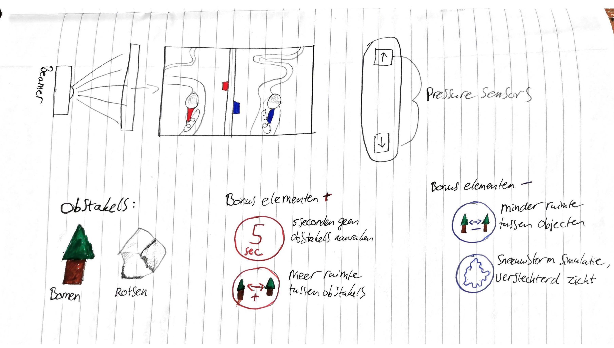

Twee spelers staan beide op een eigen snowboard. Met een beamer wordt een splitscreen weergegeven van de twee spelers die bovenaan een besneeuwde berg staan. Het doel is om zo snel mogelijk beneden te komen, terwijl je bomen, stenen en andere obstakels ontwijkt. Daarnaast zijn er enkele elementen Zo komen elementen in beeld die geactiveerd worden wanneer de speler ertegenaan rijdt om het zichzelf makkelijker te maken, of juist om het de tegenstander lastiger te maken (zie afbeelding 1).
Afbeelding 1: Conceptschets
Elementen om je het makkelijker te maken
Tegenstander lastig maken
Aan input technologie is er niet veel nodig. Enkel een kinect om de zijwaardse beweging van de twee spelers waar te nemen en twee capacitieve sensoren (druksensoren) per snowboard, om de spelers harder rechtuit te laten gaan, of juist af te laten remmen.
Ook aan output technologie is er weinig nodig om dit project voor elkaar te krijgen. Je hebt alleen een beamer nodig om het spel te weergeven op een muur en de spelers kunnen hun snelheid in het spel beïnvloeden door het snowboard op de capacitieve sensoren aan te raken met de voeten.
Dit is een spel waarbij twee gebruikers hun gehele lichaam kunnen gebruiken om te elkaar. Elke speler krijgt zijn of haar tegenstander te zien in de vorm van een schaduw. Spelers kunnen de slagen van hun tegenstanders ontwijken, net als een echt potje boxen. Op het einde wint de speler met de meeste punten.
Elke speler krijgt een camera achter zich geplaatst. Deze camera zal alle bewegingen van de speler opnemen en doorsturen naar de computer van de tegenstander. Hier worden de schaduwen digitaal vertaald en geprojecteerd door een beamer op een groot matras. De locatie van waar de speler de matras raakt wordt bepaald door verschillende “stretch sensors” , dat tevens de impact van elke slag of stoot meet zodat een hoge impact meer punten kan opleveren.
Afbeelding 2: Remote impact
Het was erg interessant om Playful Interactions te onderzoeken. Zelf heb ik de grootste connectie met dit onderwerp, ten opzichte van de andere drie, omdat in het echt beweegt tijdens het spelen van een spel. Los daarvan zijn de mogelijkheden oneindig, je kan van vrijwel elk idee een speelbare interactie maken. Ik denk niet dat installaties binnen Playful Interactions de toekomst van gaming gaat worden, in tegendeel. Het is namelijk al bewezen dat de meeste mensen gewoon het liefste met een controller gamen. De kinect bij de Xbox 360 van Microsoft had groot potentie, maar uiteindelijk is gebleken dat maar weinig mensen gebruik maakten van de mogelijkheden van de bewegingssensoren in de kinect. Een verbeterde versie van de kinect is doorgevoerd in de opvolger van de Xbox 360, de Xbox One, maar hier is zelfs nóg minder gebruik gemaakt van de kinect. Alhoewel ik er geen toekomst in zie, moet ik wel toegeven dat de concepten die ik online en in de hoorcolleges heb gezien mijn verwachtingen overtroffen. Van tevoren had ik nooit gedacht dat je zoveel kon bereiken met enkele sensoren en heel wat uurtjes werk. Daarom verwacht ik wel dat het voor educatieve doeleinde wel effectief kan zijn. Als je kinderen op een speelse manier dingen zoals rekenen kunnen laten bijrekenen, dan zullen ze niet alleen positiever kijken naar de minder leuke onderwerpen op school, maar er ook beter in worden.